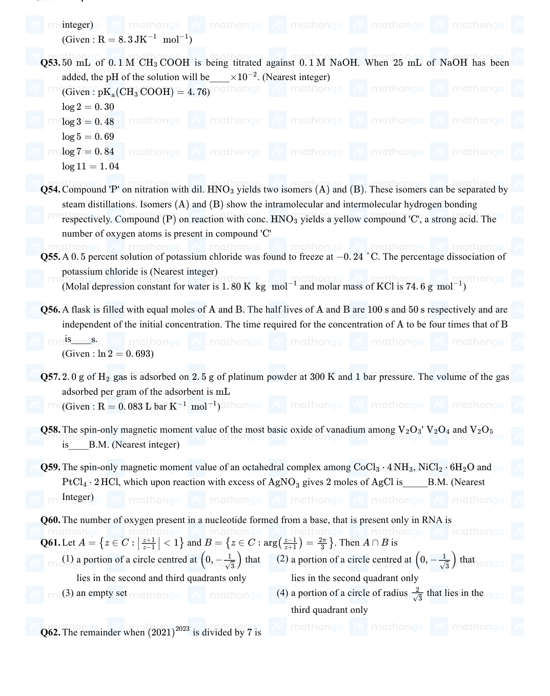

Filter questions
📌 CHEM-SBLOELEM-ALKALI_ALKALINE_EARTH_TRENDS
↗ Cluster set
Q1
CHEM-2021-0101-S2-Q033
2021 | 01 Sep | Shift 2
—
MCQ
The potassium ferrocyanide solution gives a Prussian blue colour, when added to:
Answer: D
Q2
CHEM-2021-0101-S1-Q043
2021 | 17 Mar | Shift 1
—
MCQ
Given below are two statements: Statement I: Potassium permanganate on heating at 573 K forms potassium manganate. Statement II: Both potassium permanganate and potassium manganate are tetrahedral and paramagnetic in nature. In the light of the above statements, choose the most appropriate answer from the options given below:
Answer: A
Q3
CHEM-2021-0101-S1-Q034
2021 | 18 Mar | Shift 1
—
MCQ
Match List −I with List −II List −I List −II
Answer: C
Q4
CHEM-2021-0101-S2-Q032
2021 | 18 Mar | Shift 2
—
MCQ
The first ionization energy of magnesium is smaller, as compared to that of elements X and Y, but higher than that of Z. The elements X, Y and Z, respectively, are:
Answer: C
Q5
CHEM-2021-0101-S2-Q035
2021 | 20 Jul | Shift 2
—
MCQ
Cu2+ salt reacts with potassium iodide to give
Answer: A
Q6
CHEM-2021-0101-S1-Q042
2021 | 22 Jul | Shift 1
—
MCQ
When silver nitrate solution is added to potassium iodide solution then the sol produced is: Ag+
Answer: A
Q7
CHEM-2021-0101-S2-Q034
2021 | 25 Feb | Shift 2
—
MCQ
Which of the following compound is added to the sodium extract before addition of silver nitrate for testing of halogens?
Answer: A
Q8
CHEM-2021-0101-S1-Q033
2021 | 25 Jul | Shift 1
—
MCQ
Given below are two statements: Statement I: None of the alkaline earth metal hydroxides dissolve in alkali. Srtatement II: Solubility of alkaline earth metal hydroxides in water increases down the group. In the light of the above statements, choose the most appropriate answer from the options given below:
Answer: B
Q9
CHEM-2021-0101-S2-Q035
2021 | 26 Aug | Shift 2
—
MCQ
Given below are two statements: one is labelled as Assertion
Answer: B
Q10
CHEM-2021-0101-S2-Q054
2021 | 26 Aug | Shift 2
—
Integer
In the sulphur estimation, of an organic compound gave of barium sulfate. The percentage of 0.471 g 1.44 g sulphur in the compound is. (Nearest integer) (Atomic Mass of Ba = 137u )
Answer: 42
Q11
CHEM-2021-0101-S1-Q034
2021 | 27 Aug | Shift 1
—
MCQ
The number of water molecules in gypsum, dead burnt plaster and plaster of Paris, respectively are:
Answer: A
Q12
CHEM-2021-0101-S2-Q040
2021 | 27 Aug | Shift 2
—
MCQ
Potassium permanganate on heating at 513 K gives a product which is:
Answer: D
Q13
CHEM-2021-0101-S1-Q033
2021 | 27 Jul | Shift 1
—
MCQ
Given below are two statements: One is labelled as Assertion A and the other labelled as Reason R. Assertion: Lithium halides are some what covalent in nature. A Reason R: Lithium possess high polarisation capability. In the light of the above statements, choose the most appropriate answer from the options given below:
Answer: D
Q14
CHEM-2021-0101-S1-Q034
2021 | 31 Aug | Shift 1
—
MCQ
The major component/ingredient of Portland Cement is:
Answer: D
Q15
CHEM-2021-0101-S2-Q034
2021 | 31 Aug | Shift 2
—
MCQ
Given below are two statements: one is labelled as Assertion
Answer: C
Q16
CHEM-2021-0101-S2-Q056
2021 | 31 Aug | Shift 2
—
Integer
Sodium oxide reacts with water to produce sodium hydroxide. 20.0 g of sodium oxide is dissolved in 500 mL of water. Neglecting the change in volume, the concentration of the resulting NaOH solution is _________ × 10-1M. (Nearest integer) [Atomic mass: Na = 23.0, O = 16.0, H = 1.0]
Answer: 13
Q17
CHEM-2022-0101-S2-Q036
2022 | 24 Jun | Shift 2
—
MCQ
Which one of the following compounds is used as a chemical in certain type of fire extinguishers
Answer: B
Q18
CHEM-2022-0101-S2-Q050
2022 | 24 Jun | Shift 2
—
MCQ
In the flame test of a mixture of salts, a green flame with blue centre was observed. Which one of the following cations may be present?
Answer: B
Q19
CHEM-2022-0101-S1-Q034
2022 | 25 Jun | Shift 1
—
MCQ
Which one of the following alkaline earth metal ions has the highest ionic mobility in its aqueous solution?
Answer: A
Q20
CHEM-2022-0101-S1-Q054
2022 | 25 Jun | Shift 1
—
Integer
The longest wavelength of light that can be used for the ionisation of lithium ion $\mathrm{(Li^{2+})}$ is 10−8 m. The value of is (Nearest Integer) x × x (Given: Energy of the electron in the first shell of the hydrogen atom is−2.2 × 10−18 J; h = 6.63 × 10-34Js and c = 3 × 108 ms−1)

Answer: 4
Q21
CHEM-2022-0101-S2-Q035
2022 | 26 Jun | Shift 2
—
MCQ
Boiling of hard water is helpful in removing the temporary hardness by converting calcium hydrogen carbonate and magnesium hydrogen carbonate to
Answer: A
Q22
CHEM-2022-0101-S1-Q060
2022 | 27 Jun | Shift 1
—
Integer
Acidified potassium permanganate solution oxidises oxalic acid. The spin-only magnetic moment of the mangenese product formed from the above reaction is B.M.___(Nearest Integer) ̄ Q61.The area of the polygon, whose vertices are the non-real roots of the equation z = iz2 is 3√3 3√3 (1) 2 (2) 4 (3) √3 (4) √3 4 2

Answer: 6
Q23
CHEM-2022-0101-S1-Q038
2022 | 28 Jun | Shift 1
—
MCQ
Given are two statements one is labelled as Assertion and other is labelled as Reason. Assertion: Magnesium can reduce Al2 O3 at a temperature below 1350 °C, while above 1350 °C aluminium can reduce MgO. Reason: The melting and boiling points of magnesium are lower than those of aluminium. In light of the above statements, choose most appropriate answer from the options given below
Answer: B
Q24
CHEM-2022-0101-S2-Q037
2022 | 29 Jun | Shift 2
—
MCQ
Amongst baking soda, caustic soda and washing soda carbonate anion is present in:
Answer: A
Q25
CHEM-2023-0101-S1-Q032
2023 | 01 Feb | Shift 1
—
MCQ
Match List I with List II
Answer: C
Q26
CHEM-2023-0101-S1-Q033
2023 | 01 Feb | Shift 1
—
MCQ
Choose the correct statement(s): A. Beryllium oxide is purely acidic in nature. B. Beryllium carbonate is kept in the atmosphere of CO2. C. Beryllium sulphate is readily soluble in water. D. Beryllium shows anomalous behavior. Choose the correct answer from the options given below:
Answer: B
Q27
CHEM-2023-0101-S1-Q040
2023 | 08 Apr | Shift 1
—
MCQ
Given below are two statements: Statement I: Lithium and Magnesium do not form superoxide Statement II: The ionic radius of Li+ is larger than ionic radius of Mg2+ In the light of the above statements, choose the most appropriate answer from the questions given below: In the light of the above statements, choose the most appropriate answer from the questions given below:
Answer: A
Q28
CHEM-2023-0101-S1-Q057
2023 | 08 Apr | Shift 1
—
Integer
. Match List I with List II: List II (Compound with Functional group List I (Reagents used) detected) A.Alkaline solution of copper I. sulphate and sodium citrate B. Neutral FeCl3 solution II. C. Alkaline chloroform solution III. D.Potassium iodide and sodium IV hypochloride Choose the correct answer from the options given below: (1) A-III, B-IV, C-I, D-II (2) A-III, B-IV, C-II, D-I (3) A-IV, B-I, C-II, D-III (4) A-II, B-IV, C-III, D–I
Structured List-I / List-II view
| Label | List-I | List-II | Match |
|---|---|---|---|
| A | Alkaline solution of copper | sulphate and sodium citrate | I |
| B | Neutral FeCl3 solution | C. Alkaline chloroform solution III. | II |
| D | Potassium iodide and sodium | hypochloride | IV |
Answer: 70
Q29
CHEM-2023-0101-S2-Q043
2023 | 08 Apr | Shift 2
—
MCQ
Given below are two statements: One is labelled as Assertion A and the other is labelled as Reason R Assertion A: Sodium is about times as abundant as potassium in the oceans. 30 Reason R: Potassium is bigger in size than sodium. In the light of the above statements, choose the correct answer from the options given below
Answer: C
Q30
CHEM-2023-0101-S2-Q051
2023 | 08 Apr | Shift 2
—
Integer
In Hall-Heroult process, the following is used for reducing Al2 O3:- (1) Magnesium (2) Na3 AlF6 (3) Graphite (4) CaF2
Answer: 3
Q31
CHEM-2023-0101-S1-Q037
2023 | 10 Apr | Shift 1
—
MCQ
Lime reacts exothermally with water to give ‘A’ which has low solubility in water. Aqueous solution of ‘A’ is often used for the test of CO2, a test in which insoluble B is formed. If B is further reacted with CO2 then soluble compound is formed. ‘A' is
Answer: B
Q32
CHEM-2023-0101-S1-Q060
2023 | 10 Apr | Shift 1
—
Integer
In potassium ferrocyanide, there are ______ pairs of electrons in the t2g set of orbitals.

Answer: 3
Q33
CHEM-2023-0101-S2-Q037
2023 | 10 Apr | Shift 2
—
MCQ
Number of water molecules in washing soda and soda ash respectively are:
Answer: C
Q34
CHEM-2023-0101-S1-Q031
2023 | 11 Apr | Shift 1
—
MCQ
25 mL of silver nitrate solution ( 1M ) is added dropwise to 25 mL of potassium iodide ( 1.05 M ) solution. The ion(s) present in very small quantity in the solution is/are
Answer: D
Q35
CHEM-2023-0101-S1-Q036
2023 | 11 Apr | Shift 1
—
MCQ
Match List-I with List-II: List-I List-II A. K I. Thermonuclear reactions B. KCI II. Fertilizer C. KOH III. Sodium potassium pump D. Li IV. Absorbent of CO2
Structured List-I / List-II view
| Label | List-I | List-II | Match |
|---|---|---|---|
| A | K | Thermonuclear reactions | I |
| B | KCI | Fertilizer | II |
| C | KOH | Sodium potassium pump | III |
| D | Li | Absorbent of CO2 | IV |
Answer: A
Q36
CHEM-2023-0101-S2-Q039
2023 | 11 Apr | Shift 2
—
MCQ
Alkali metal from the following with least melting point is
Answer: B
Q37
CHEM-2023-0101-S1-Q041
2023 | 12 Apr | Shift 1
—
MCQ
The density of alkali metals is in the order
Answer: C
Q38
CHEM-2023-0101-S2-Q049
2023 | 13 Apr | Shift 2
—
MCQ
In the wet tests for detection of various cations by precipitation, Ba2 + cations are detected by obtaining precipitate of
Answer: B
Q39
CHEM-2023-0101-S2-Q037
2023 | 24 Jan | Shift 2
—
MCQ
Choose the correct representation of conductometric titration of benzoic acid vs sodium hydroxide.

Answer: A
Q40
CHEM-2023-0101-S2-Q039
2023 | 24 Jan | Shift 2
—
MCQ
Identify the correct statements about alkali metals. A. The order of standard reduction potential (M+ | M) for alkali metal ions is Na > Rb > Li. B. CsI is highly soluble in water. C. Lithium carbonate is highly stable to heat. D. Potassium dissolved in concentrated liquid ammonia is blue and paramagnetic. E. All alkali metal hydrides are ionic solids. Choose the correct answer from the options given below
Answer: C
Q41
CHEM-2023-0101-S2-Q040
2023 | 24 Jan | Shift 2
—
MCQ
Given below are two statements, one is labelled as Assertion A and the other is labelled as Reason R. Assertion A: Beryllium has less negative value of reduction potential compared to the other alkaline earth metals Reason R: Beryllium has large hydration energy due to small size of Be2+ but relatively large value of atomisation enthalpy. In the light of the above statements, choose the most appropriate answer from the options given below.
Answer: B
Q42
CHEM-2023-0101-S1-Q038
2023 | 25 Jan | Shift 1
—
Integer
In sulphur estimation. 0.471 g of an organic compound gave 1.4439 g of barium sulphate. The percentage of sulphur in the compound is _______(Nearest Integer) (Given: Atomic mass Ba: 137u: S: 32u, O: 16u )
Answer: 2
Q43
CHEM-2023-0101-S2-Q037
2023 | 25 Jan | Shift 2
—
MCQ
Given below are two statements, one is labelled as Assertion A and the other is labelled as Reason R Assertion A:- The alkali metals and their salts impart characteristic colour to reducing flame. Reason R:- Alkali metals can be detected using flame tests. In the light of the above statements, choose the most appropriate answer form the options given below
Answer: B
Q44
CHEM-2023-0101-S2-Q051
2023 | 25 Jan | Shift 2
—
Integer
Potassium dichromate acts as a strong oxidizing agent in acidic solution. During this process, the oxidation state changes from (1) +3 to +1 (2) +6 to +3 (3) +2 to +1 (4) +6 to +2

Answer: 12
Q45
CHEM-2023-0101-S1-Q034
2023 | 30 Jan | Shift 1
—
MCQ
The alkaline earth metal sulphate(s) which are readily soluble in water is/are:
Answer: C
Q46
CHEM-2023-0101-S1-Q035
2023 | 30 Jan | Shift 1
—
MCQ
Lithium aluminium hydride can be prepared from the reaction of
Answer: B
Q47
CHEM-2024-0101-S1-Q038
2024 | 01 Feb | Shift 1
—
MCQ
Given below are two statements: Statement (I): Potassium hydrogen phthalate is a primary standard for standardisation of sodium hydroxide solution. Statement (II): In this titration phenolphthalein can be used as indicator. In the light of the above statements, choose the most appropriate answer from the options given below:
Answer: A
Q48
CHEM-2024-0101-S2-Q047
2024 | 09 Apr | Shift 2
—
MCQ
Which of the following compound can give positive iodoform test when treated with aqueous KOH solution followed by potassium hypoiodite.
Answer: A
Q49
CHEM-2025-0101-S1-Q040
2025 | 22 Jan | Shift 1
—
MCQ
The work functions of cesium (Cs) and lithium (Li) metals are 1.9 eV and 2.5 eV, respectively. If we incident a light of wavelength 550 nm on these two metal surfaces, then photo-electric effect is possible for the case of
Answer: C